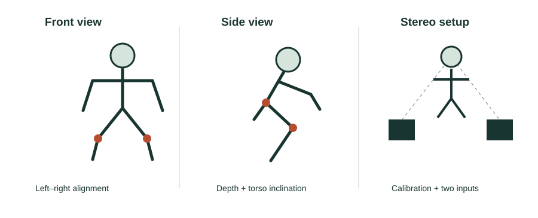

Comparing camera assumptions
Similar goal, different camera assumptions
All six systems use visual evidence to judge exercise, but they do not operate under the same conditions. This matters because a successful result in a controlled setup may not carry over to a phone placed anywhere in a room.
| Study | Setup | Effect on the comparison |
|---|---|---|
| Real-Time Feedback and Benchmark Dataset for Isometric Pose Evaluation [2] | Frontal phone RGB recordings; full body visible without occlusion. | Its strong pose-classification results depend on constrained visibility. They do not test arbitrary camera placement. |
| Pose Trainer [3] | RGB recordings; selects visible-side joints and normalizes by torso length. | Its rules remain dependent on the view, despite reduced sensitivity to body scale. |
| Real-Time Posture Correction of Squat Exercise [6] | Calibrated stereo input with MediaPipe landmarks. | Its classification result is not a single-phone benchmark. |
| AIFit [4] | Motion capture and four RGB cameras collect ground truth; monocular smartphone examples are also shown. | Collection hardware and deployed input are different. Smartphone examples do not establish robustness under every camera condition. |

What worked, and what remains limited?
Controlled views make the relevant joints easier to observe. Pose Trainer also reduces scale differences with torso normalization. However, neither normalization nor strong internal accuracy proves that hidden joints or a changed camera angle will be handled reliably. [2, §3] [3, §4.3–4.6]
FormCoach allows ordinary cameras but explicitly discusses viewpoint ambiguity and occlusion. Its flexible input does not remove those problems; they can contribute to incorrect feedback. [1, §4.1]
Conclusion from the comparison
The studies trade easier setup against more controlled evidence. For our project, camera placement should be part of the tested design. A frontal view may expose inward knee movement while a side view may expose depth and torso lean. These are choices to validate, rather than assuming one view can judge every fault.
Question to consider: Would stereo accuracy convince you that the same system works with one uncalibrated phone? The missing evidence is a test using that phone input.